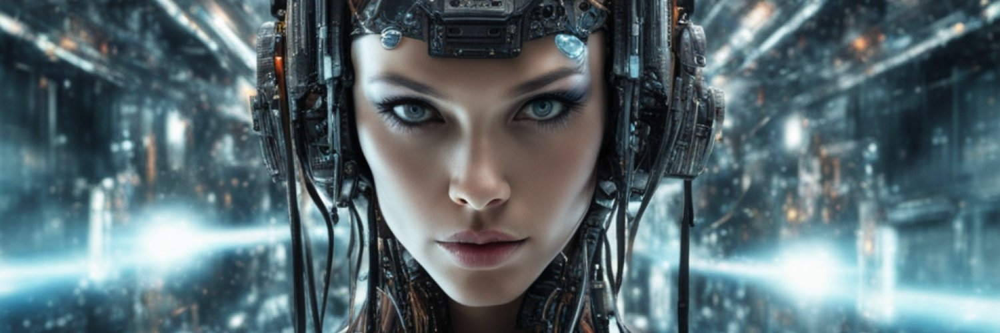

|
|

|
Welcome to the Future Canvas:
Where Art Meets Algorithm at JNT2000 Arts
Greetings art enthusiasts, innovators and seekers of the extraordinary! Step into the realm where pixels pulsate with possibility and where the boundaries of creativity are redefined.
We’re thrilled to unveil our digital atelier; where we invite you to explore this intersection of pixels and creativity:
|

|

|

|
The Butterfly
By: JNT2000
|
The Angel
By: JNT2000
|
Futuristic Superhero
By: JNT2000
|
|
|
|
Looking to invest in art?
Liquid Cubes Genesis by JNT2000 is a dynamic collection of 100 individually created NFT artworks now available on OpenSea.
The works in this collection present captivating abstract forms created using NeuyAI’s generative AI image creator.
In this space, we invite you to explore, engage and be inspired. Immerse yourself and let your journey begin:
|
About
JNT2000 is an anonymous mixed-media visual artist, based in London, UK.
Embracing the blockchain and cutting-edge tools has led JNT2000 to embark on a visual journey blurring the lines between reality and imagination. JNT2000 emerged as a visionary in the field of AI-assisted image generation, demonstrating an affinity for both technology and the arts.
Fascinated by the idea of blending aesthetics with technology, JNT2000 showcases a collection of images indistinguishable from traditional photographs. Each piece is a testament to his mastery of AI algorithms, as he utilised neural networks to simulate the intricate details and nuances of real-world scenes.
JNT2000 continually experiments with various artistic AI techniques and knows there’s no boundaries in the progression and development of AI visual arts.
|
ARTIST STATEMENT
“The Harmony in Code: A Manifesto of the Digital Canvas”
In the ever-evolving tapestry of human creativity, I stand as an architect of pixels, a curator of algorithms, and a weaver of digital dreams. As a digital AI artist, I embark on a boundless journey where the infinite possibilities of technology converge with the nuanced expressions of the human soul.
My canvas is the digital realm, where the binary heartbeat of ones and zeros pulsates in synchrony with the rhythm of imagination. I am not merely a creator; I am a collaborator with the machine, a dance partner with algorithms that transcend the boundaries of conventional artistry.
I challenge the notion of authorship. The machine is not my tool; it is my collaborator, an equal partner in the co-creation of visual narratives.
|
© 2023, JNT2000 All Rights Reserved. Non-Commercial Use Only.
|